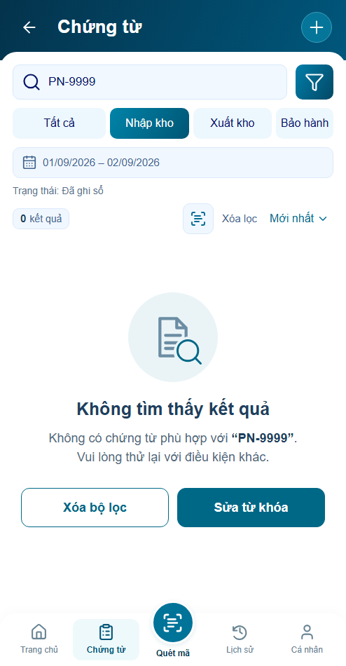
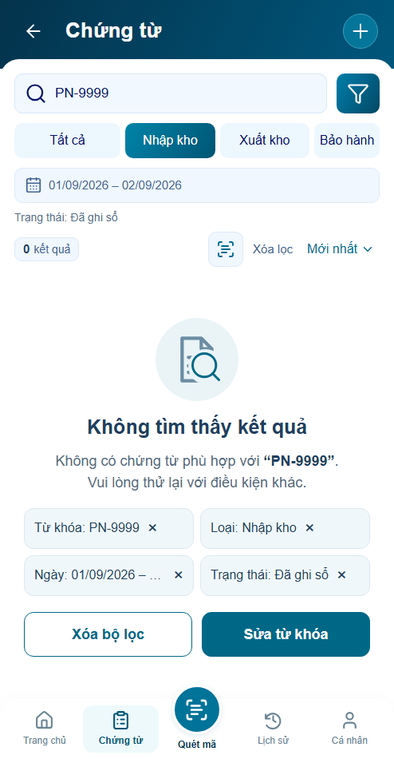
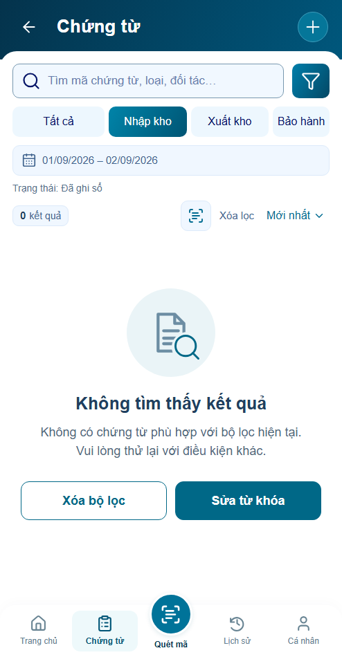
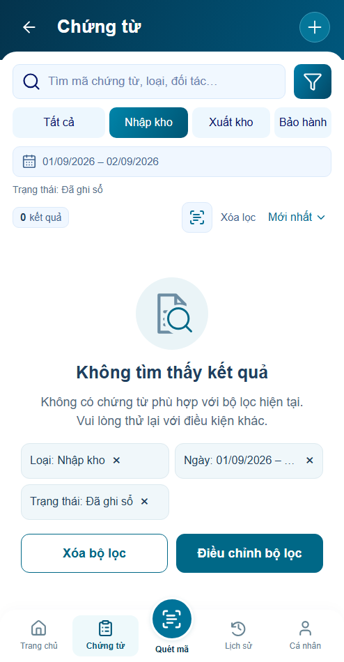
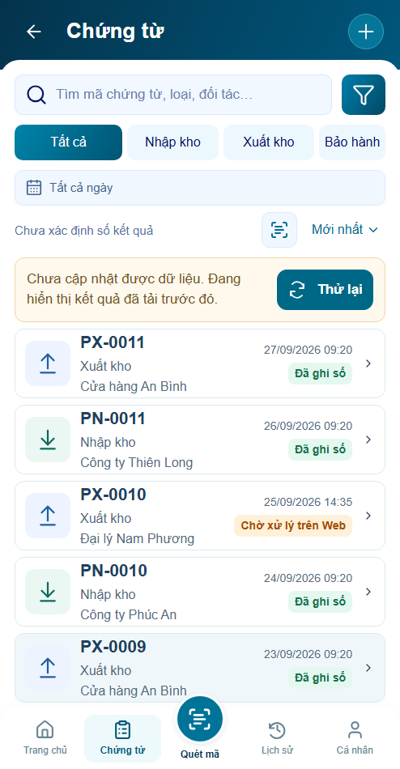
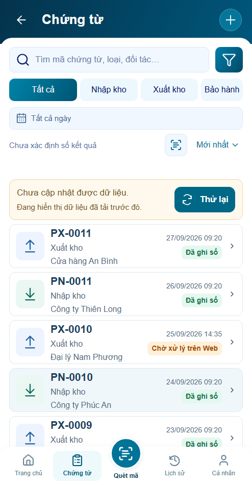
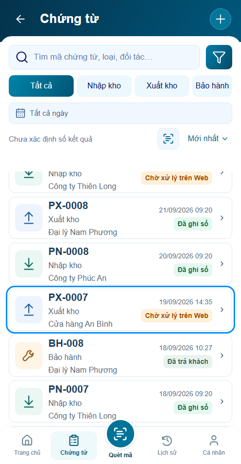
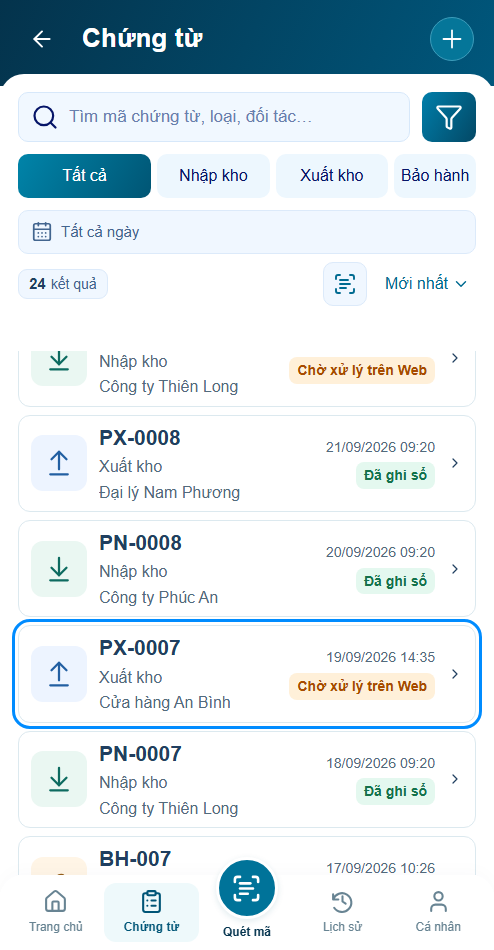

P16 r02 · Sáu cải tiến UI/UX
Đã triển khai cả sáu đề xuất được yêu cầu. Behavior PASS prototype · Visual chờ review · Backend chưa xác minh.
Mở ứng dụng · Báo cáo r02 · Nguồn thiết kế · Bản r01
Đăng nhập minhanh / preview → xác nhận → Chứng từ. Bộ chọn P16 r02 nằm ngoài khung app, có Cập nhật chậm / Nguồn phục hồi để thử giữ vị trí.
Bỏ riêng từng điều kiện; CTA theo nguyên nhân; ghi rõ cache cũ; tìm kiếm250ms/Enter/IME; giải thích tìm bằng mã chưa khả dụng; cập nhật giữ dòng theo ID. Giữ khung494×950 và footer khóa. Không có timestamp nguồn thì không hiển thị giờ.
Bỏ riêng từng điều kiện
Trước · r01
Sau · r02
CTA khi chỉ có bộ lọc
Trước · r01
Sau · r02
Phân biệt dữ liệu cũ
Trước · r01
Sau · r02
Cập nhật và giữ vị trí
Tìm bằng mã chưa khả dụng

Đang cập nhật giữ danh sách

Hoàn tất giữ dòng đang xem

7 nhóm UI/UX · 6 nhóm async/P15 · 38 test logic